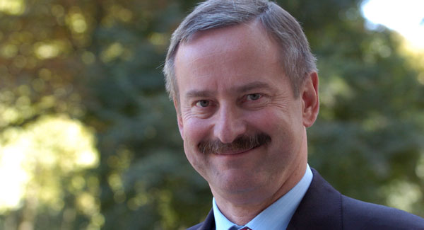
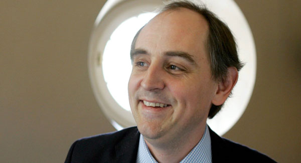
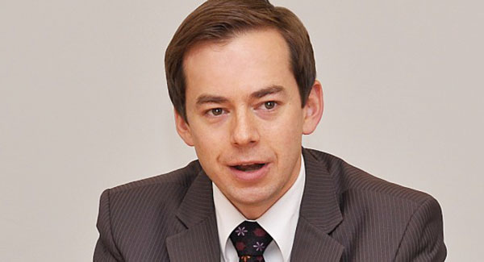
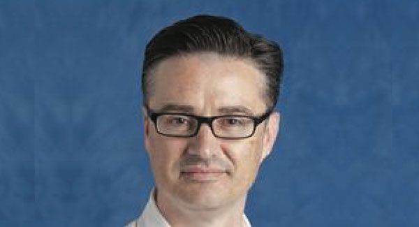
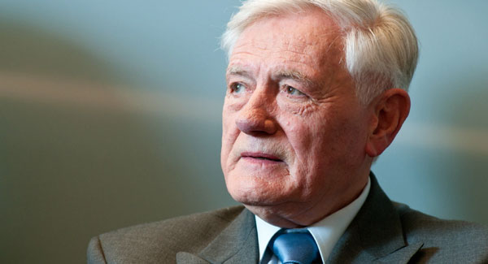

Mr Siim Kallas
- Vice-President of the European Commission
- European Commissioner for Transport
- Prime Minister of Estonia (2002-2003)

Mr Edward Lucas
- International Editor of The Economist
- Oversees the political coverage of Central and Eastern Europe
- Journalist and author

Mr Arnoldas Pranckevičius
- Diplomatic Adviser to the President of the EP (2009-2012)
- President of the Lithuanian Community in Belgium
- Domestic Policy Adviser to the President of Lithuania (2004-2005)

Dr Richard Mole
- Senior Lecturer in Political Sociology at University College London
- Author of The Baltic States from the Soviet Union to the European Union (Routledge, 2012)

President Valdas Adamkus
- President of Lithuania: from 1998 to 2003 and from 2004 to 2009
- UNESCO Goodwill Ambasador
- European of the Year 2007

Dr Roberts Ķīlis
- Leading author of Latvia 2030 long term strategy (2007-2009)
- Minister of Education and Science of Latvia (2011-2013)
- Associate professor and Head of Business Department, SSE Riga